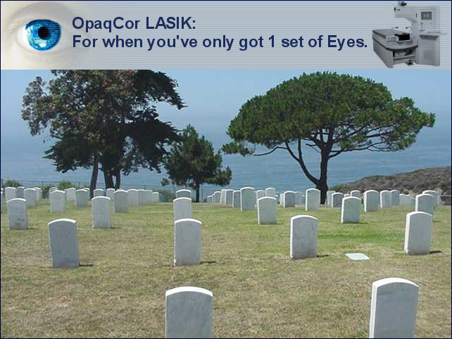

Для немедленного освобождения.
Лента новостей RS от 16 декабря 2004 г. Слепая лагуна, Луизиана.
Лазерный центр Blinded By The Light (BBTLLC) в Луизиане рад сообщить о появлении новейшего поколения лазерных корректоров. Эта новая технология скоро будет доступна каждому жителю континентальной части Соединенных Штатов.
Компания Blinded By The Light открывает новую эру в рефракционной хирургии благодаря своей первой в своем роде мобильной услуге. Будущие пациенты, которые боятся риска, связанного с поездкой в клинику LASIK и возвращением из нее, вскоре смогут пройти операцию LASIK, не выходя из дома.
Доктор Марк Овзорро, которого пациенты и истцы ласково называют Зорро, является медицинским директором BBTLLC и на сегодняшний день провел более двадцати процедур LASIK в различных странах третьего мира. Доктор Овзорро, тесно сотрудничая со своей уважаемой коллегой, доктором Имой Бутчер, разработал OpaqCor (tm), уникальную форму лазерной коррекции зрения, которая направлена на устранение всех оптических аберраций, присущих естественному глазу. Доктор Марк Овзорро и его медицинский персонал будут путешествовать по стране в полностью оборудованном передвижном хирургическом трейлере. Приготовьтесь выбросить свои очки и контактные линзы и испытать "зрение низкой четкости", или LDV, как его быстро называют в индустрии рефракционной хирургии.
Основная цель процедуры OpaqCor (tm) - предотвратить попадание света в глаз путем создания полностью непрозрачной роговицы. Процедура OpaqCor(tm) начинается со специального макрокератома, разработанного доктором Овзорро. Вырезается лоскут толщиной 400 микрон, полностью перерезающий роговичные нервы и необратимо ослабляющий роговицу. Всасывающее устройство высокого давления на макрокератоме предназначено для сдавливания зрительного нерва и у девяноста процентов пациентов приводит к отслоению сетчатки. За этим следует очень широкий Сверхглубокая абляция (EWED(tm)). Абляция EWED (tm), разработанная доктором Батчером, предназначена для прокола стромального слоя и полного разрыва глаза. Следующим этапом является абляция. Компания Blinded By The Light разработала усовершенствованный лазер военного калибра и устройство слежения за глазами, использующее орбитальную спутниковую систему GPS. Лазер запускается со спутника, и холодные высокоэнергетические импульсы , которые мягко изменяют форму глаза, контролируются датчиком зрения с точностью плюс-минус три метра. После удаления лоскут погружают в слой из стальной стружки и грибковых спор, а затем бессистемно помещают обратно на глаз. Проводят обильное орошение серной кислотой в течение как минимум шестидесяти секунд. Затем пациента опускают на дорожку перед домом, и ему предлагается, пошатываясь, вернуться в свой уютный дом.
Перед процедурой коррекции зрения низкой четкости (Low Definition Vision, tm), которая всегда проводится на обоих глазах, пациентам рекомендуется принимать мегадозы Vioxx. Чтобы контролировать расходы, послеоперационное наблюдение осуществляется строго по электронной почте. Если пациент не покончил с собой в течение шести месяцев после проведения процедуры LASIK в BBTLLC, ему рекомендуется прекратить прием антидепрессантов. Для таких пациентов может быть организован специальный контрольный визит на дом к нашему врачу-консультанту доктору Кеворкяну.
Отказ от ответственности: Хотя на сегодняшний день зрение низкой четкости (Low Definition Vision, tm) и процедура OpaqCor (tm) принесли девяностопроцентный успех, у небольшого процента пациентов могут сохраняться некоторые остаточные зрительные функции. У менее чем десяти процентов пациентов может сохраниться способность различать движения рук, и менее чем у одного процента может сохраниться способность считать пальцы. Для таких пациентов программа "Ослепленный светом" предлагает бесплатное пожизненное улучшение зрения. В настоящее время к оплате принимаются только наличные в немаркированных банкнотах. Также могут быть организованы банковские переводы на наш номерной счет в швейцарском банке . Формы информированного согласия будут предоставлены уже через три месяца после операции и могут быть отправлены непосредственно на адрес санатория пациента или государственной психиатрической больницы. Компания BBTLLC не предоставляет белые трости, и перед проведением процедуры LASIK для зрения низкой четкости (tm) пациентам рекомендуется выучить азбуку Брайля.
Лента новостей RS от 16 декабря 2004 г. Слепая лагуна, Луизиана.